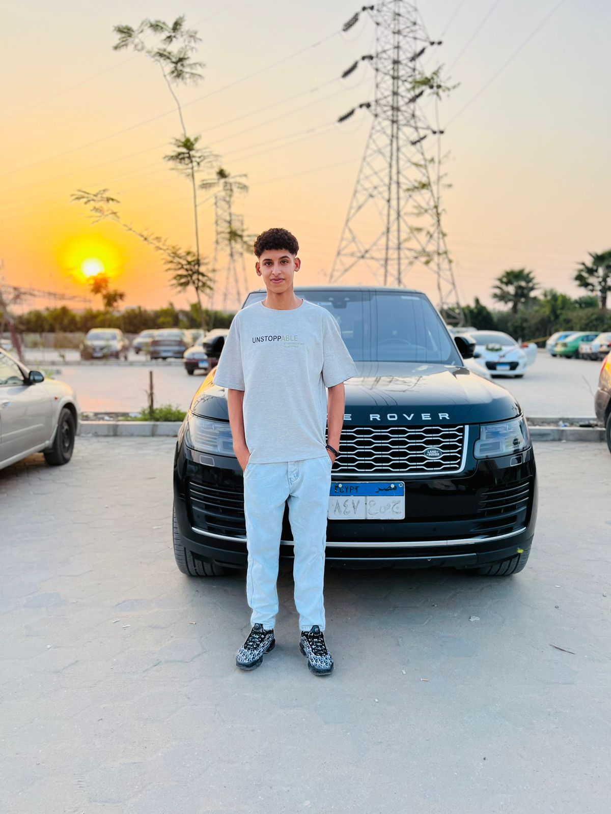

About Me
I am a dedicated Artificial Intelligence student with a strong foundation in problem solving and software development. Currently pursuing my Bachelor's degree in Computers and Information with a specialization in AI, I am deeply committed to mastering modern AI technologies and applying them to create impactful solutions.
My journey in tech is driven by curiosity and persistence. I actively practice algorithmic problem solving and continuously enhance my skills in programming and machine learning frameworks. I believe in building a solid technical foundation while staying adaptable to the rapidly evolving AI landscape.
Education
Zagazig National University
Bachelor of Computers and Information
Major: AI | Exped. 2026
Career Objective
To become a highly skilled AI Engineer capable of building intelligent, scalable systems that solve real-world problems, while continuously learning.
My Services
Portfolio Websites
Crafting professional, high-converting portfolio websites that showcase your unique brand and expertise to the world.
- Custom Modern UI
- Mobile Responsive
- Fast Performance
Landing Pages
Designing high-impact landing pages optimized for marketing campaigns, product launches, and business growth.
- Optimized CTA
- Conversion Focused
- SEO Ready
AI Projects
Developing intelligent solutions using machine learning and data science to solve complex business problems.
- ML Model Training
- Data Visualization
- Intelligent Automation
Technical Expertise
Programming
- Python
- C++
Libraries & Tools
- PyTorch
Core Competencies
Current Focus
Strengthening Deep Learning foundations and advancing in Competitive Programming.
Case Studies & Deep Dives
توثيق تقني لحلول برمجية واقعية - من الفكرة إلى النتائج.

نظام التشخيص الطبي الذكي (Diagnostic AI)
تطوير موديل للتعرف على الأمراض من خلال صور الأشعة باستخدام الشبكات العصبية الالتفافية (CNN).
المشكلة
الحاجة لسرعة ودقة فائقة في تشخيص الحالات الحرجة بعيداً عن الأخطاء البشرية.
الحل
بناء معمارية Transformer متطورة لتحليل الأنماط الدقيقة في الصور الطبية.
The Diagnostic Eye: Retinal Scan Analysis
Developed an end-to-end diagnostic pipeline that identifies early-stage pathologies with 97.2% accuracy.
Problem
Manual scan analysis was slow and prone to human error in low-contrast conditions.
Solution
Implemented a customized UNet architecture with attention mechanisms for multi-class segmentation.

Neural Pathfinding for Logistics
Optimization of warehouse robotics pathfinding using multi-agent reinforcement learning (MARL).
Problem
Static algorithms failed to adapt to dynamic obstacles and high-traffic congestion points.
Solution
Developed a PPO-based agent cluster that reduced logistics collision rates by 42%.

Ar-SLR: Arab Sign Language Recognizer
A real-time translation system for Arabic Sign Language using skeletal tracking and LSTM networks.
Problem
High latency and poor performance in variable lighting conditions for gesture recognition.
Solution
Leveraged MediaPipe for feature extraction paired with a bi-directional LSTM for temporal context.
AI Neural Architect
Describe your project or problem:
أوصف فكرتك أو مشكلة بتواجهك، والذكاء الاصطناعي هيقترحلك أفضل معمارية وأدوات لتنفيذها.
Waiting for project parameters...
Experience & Journey
Self-Learning AI & Programming
Building strong foundations in algorithms and data structures.
Practicing problem solving through competitive programming platforms.
Learning machine learning concepts and tools independently. (Self-learning via YouTube and
online resources in Programming, Machine Learning, and Problem Solving).
ICPC Participant
Competed in the International Collegiate Programming Contest (ICPC), demonstrating advanced problem-solving skills, algorithmic efficiency, and teamwork under time pressure.
Let's Connect
Ready to collaborate or have an exciting opportunity? Feel free to reach out.